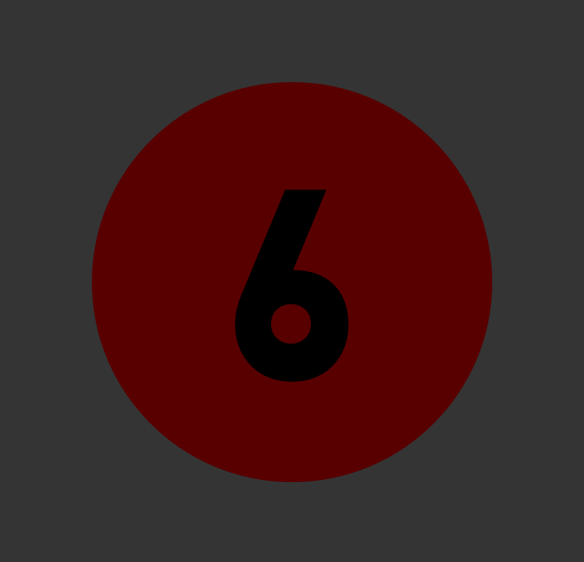
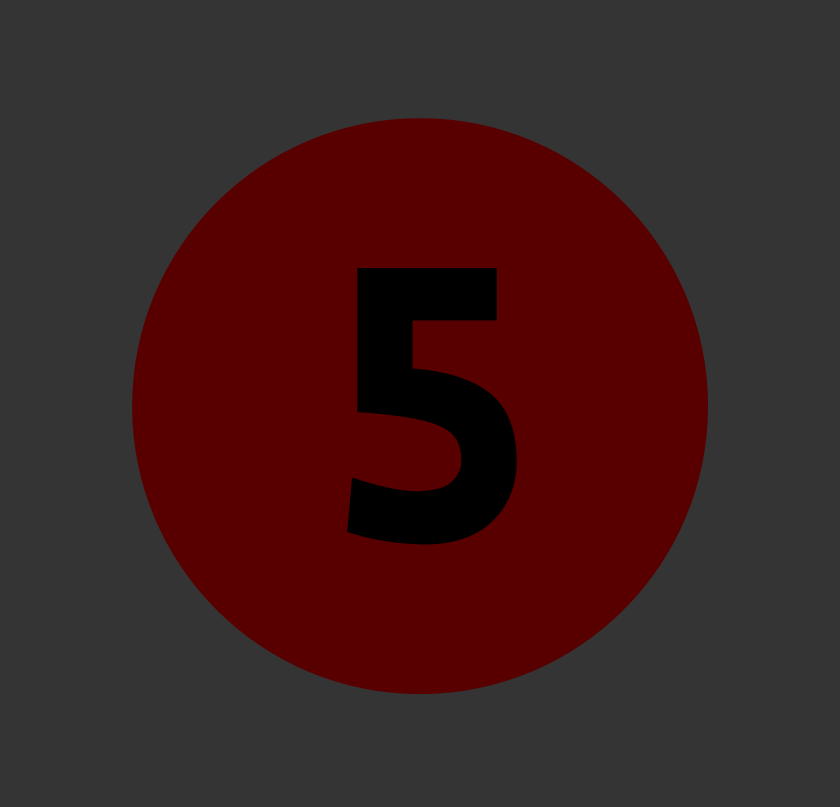
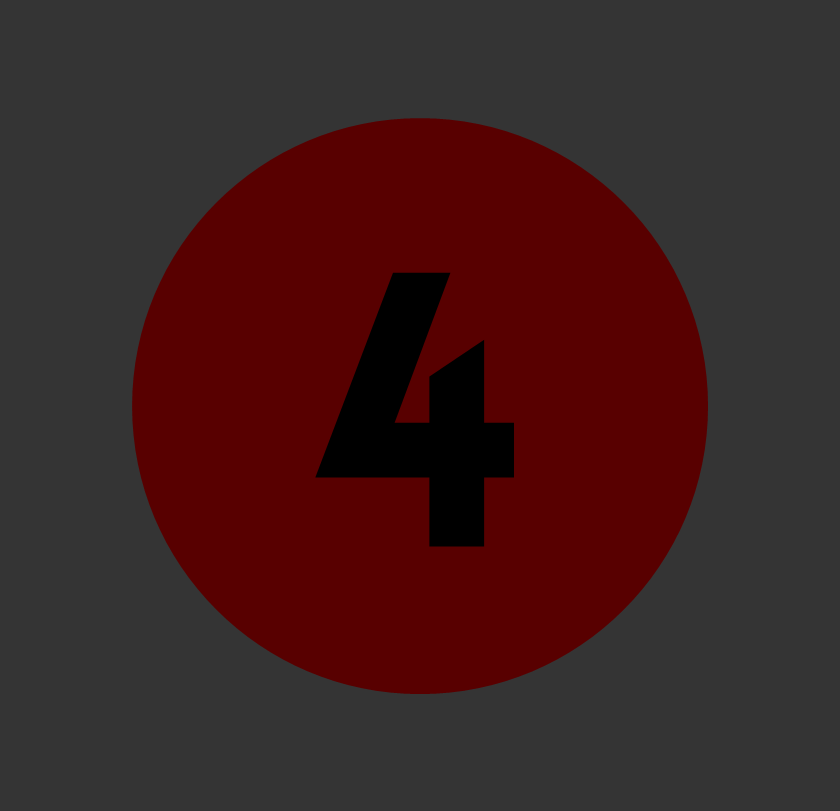
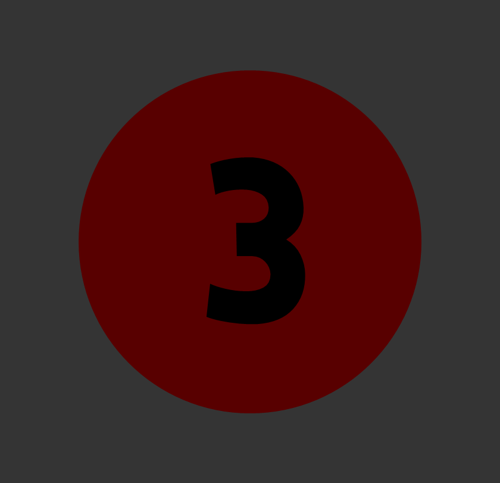
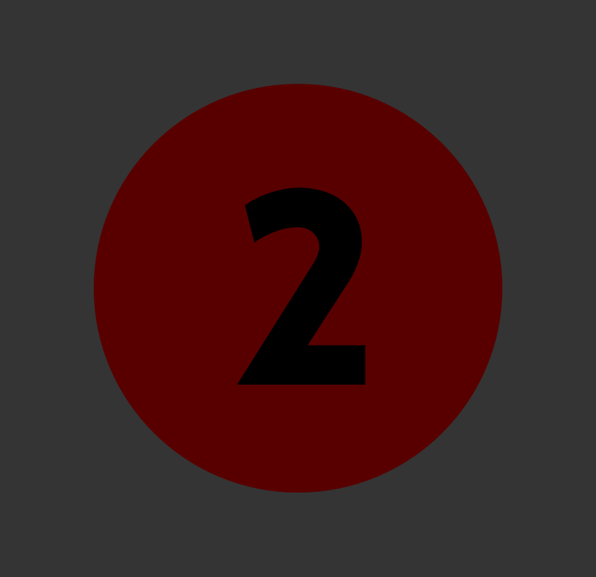
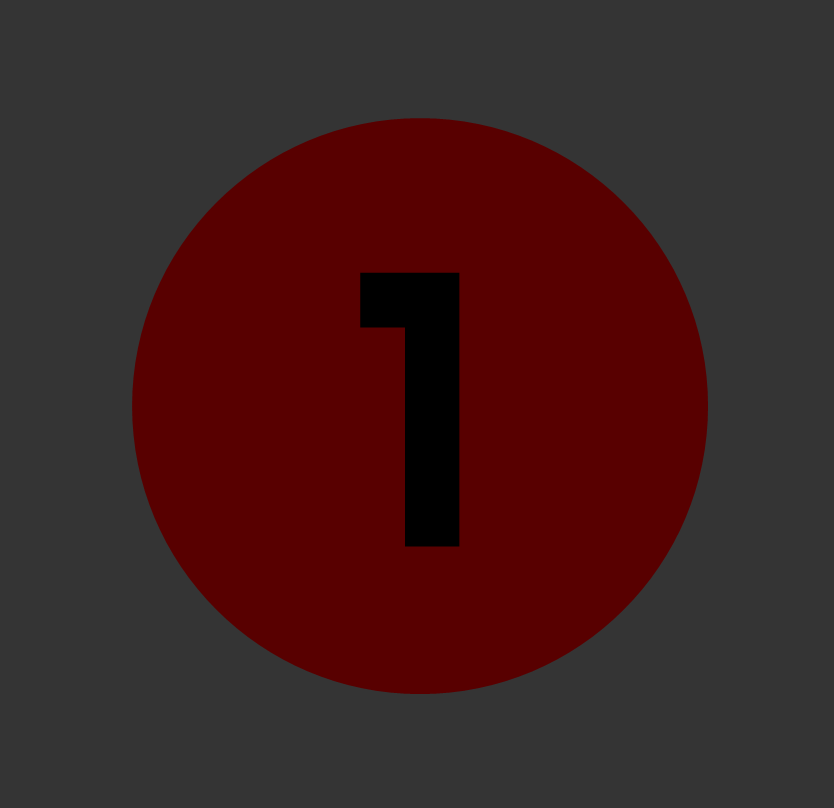
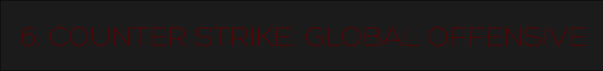
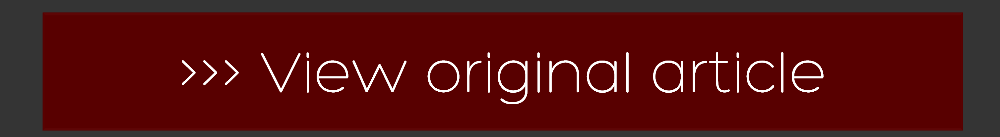

     

The second most played game on Steam, and the fourth most popular MMO, Counter Strike: Global Offensive is one of the youngest games on the list. The fourth game in the Counter Strike family came out in 2012 and was the best selling MMO of that year, with more than 12 million copies sold. However, the game didn't really explode into popularity until two years ago. Today, nearly 3 million players join the game every month, though with more than 250 million hours of game play, those players spend quite a lot of time in the game.
Counter-Strike: Global Offensive is an online first-person shooter developed by Hidden Path Entertainment and Valve Corporation.
Last year, World of Warcraft lost more than 40% of its subscribers, however, they still remain a force to be reckoned with, garnering the coveted third spot on the most played list. World of Warcraft saw a slight boost in players this month, most likely due to the upcoming release of Blizzard's new game Overwatch (which I am extremely excited to play.) Currently, WoW has about 5.5 million players each month.
World of Warcraft is the fourth released game set in the fantasy Warcraft universe, which was first introduced in Warcraft: Orcs & Humans in 1994. It was released in 2004 and in the twelve years since then, has been at the top of such lists like this several times. To get involved in one of my personal favorite games you can check out there website by clicking here. Also, the super popular game is got the movie treatment this year, and despite being rather polarizing to a lot of fans and critics, I would suggest any fan of the game checks out the movie!
Dota 2 toppled the Blizzard giant in terms of numbers less than two years ago. It is the most played game on Steam. Dota 2 has about 15 million unique players (nearly twice the amount of WoW), with roughly one million players signing in each day.
Dota 2, as the name might suggest, is the second game in the Dota series created by Valve.
The only new addition to this list, Overwatch have managed to secure 20 million unique registered players (important distinction, 20 million players, not 20 million copies sold). Since its release earlier this year, Overwatch has managed to become a huge game, and evidently a huge (and needed) pay off for Blizzard. For those of you who aren't familiar with the game, Overwatch is a first-person shooter with unique, creative characters and an artistic aesthetic unlike any other shooter.
If you aren't already playing the fastest growing MMO shooter in the world, I only have one question for you: Why not?!?
Another Blizzard game makes the list! And this one beats out Overwatch by 30 million players. Hearthstone had more than 50 million players log in last month, which means more people play Hearthstone than the three games above combined. Despite coming in second, Hearthstone is actually the most popular game to watch in the world of eSports, and since it has that distinction, Hearthstone competitors get paid the most amount of money to play in eSports tournaments (sometimes millions of dollars).
Hearthstone was released by Blizzard just two years ago. To join in the fun, for free might I add, all you have to do is click somewhere around here.
League of Legends has dominated the online market since at least 2012. Four years ago, the massively popular game had about 12 million people a day, and about 32 million unique players every month. The game has now grown to an impressive 100 million players a month who play the game for more than one billion hours. For those of you playing at home, that means that League of Legends has four times as many players than our number three on this list and twice the number of Hearthstone players. If you aren't already playing it, what's stopping you?
League of Legends was developed by Riot Games and was released to the public in 2009.
